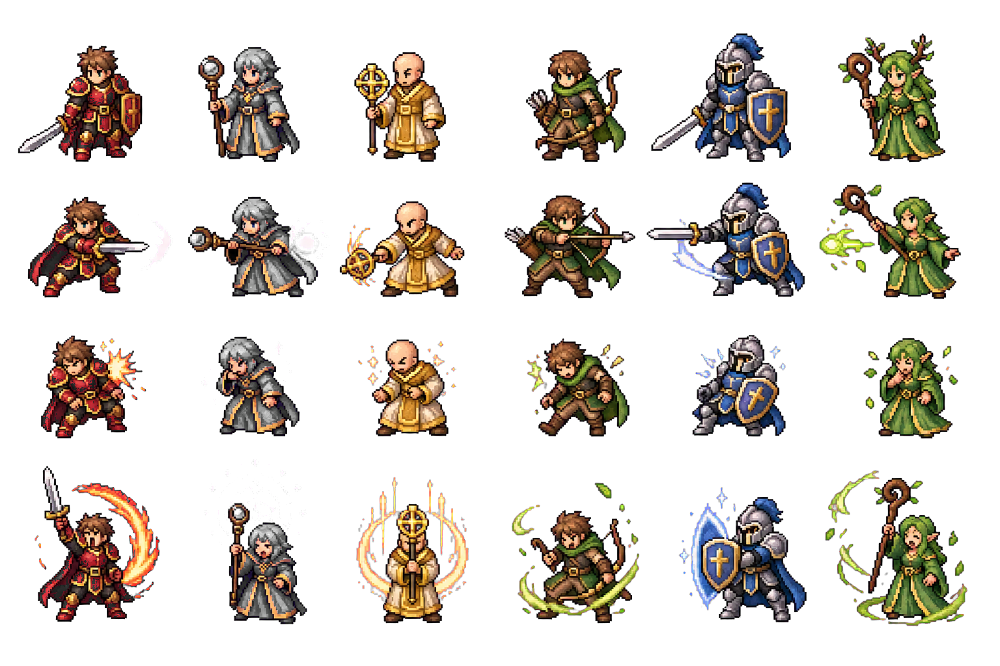

一个本地可打开的放置类冒险网页：多地点迷宫、小队在席、只读战报、现实时间推进，装备与词缀在后台自己结算。
地点、职业与队伍规模 —— 全部可在纯前端里跑通。
与常见前端项目不同，LogQuest 刻意停留在「单页 + 单脚本」：不依赖 dev server，也不引入构建链路，改数值就在 app.js 顶部见真章。

解锁新职业、新地区与更高层，是一条写在数据里的有向图；玩家只需决定下一站派谁去。
新档起点固定；之后每一站完成指定层数，会解锁新职业、新地点或事件。下表是「你打完这一站会打开什么」的极简版。
基础属性、成长、定位与「几级学哪个技能、战斗中何时触发」都在脚本顶部配置，可一眼对比。
装备在目录里定义好槽位与基础属性；随机词缀由 affix 池投出。原型里角色会按简单规则比较战力并自动换装，让你专注看战报，而不是反复打开背包点装备。
目录表 itemCatalog 与词缀 affixPool 同区维护；若要做「装备驱动构筑」，这里是第一现场。
是更多层数与 Roguelite 分岔，是更强叙事事件，还是把 100 场模拟扩展成可分享的种子竞速？路线没有标准答案，但仓库已经给了「不绑构建」的实验台。
"放置不是偷懒， 是把注意力从微操里收回来， 留给路线与配装。"
只读日志、现实时间、装备自动流转 —— LogQuest 用最小交互包装一条完整的冒险心流。
用浏览器打开仓库根目录 index.html 即可试玩。本套幻灯片为单页 HTML，与游戏同样「零构建」。
← → 翻页 · 底部圆点 · ESC 索引 · 流水线页用键盘步进